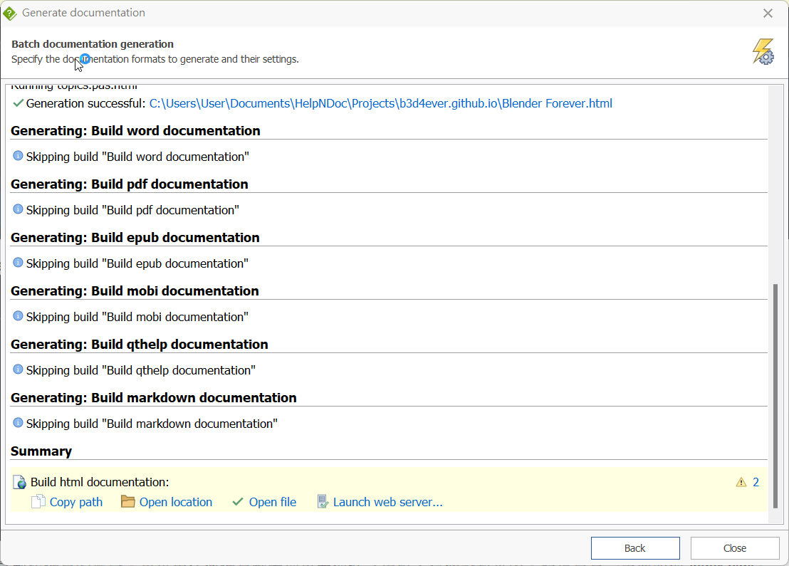

參考：
1. 首先，去 Github 註冊一組帳號，完成之後畫面應該是進到 Github 中。
2. 安裝 Github Desktop，這個軟體是用來更新每次的要上傳的檔案更新。
3. 在Github 中，建立一個新的 repository，名稱為 XXXX.github.io
4. Create repository按下之後，到Setting 裡面的 page，先隨便選擇一個 theme 安裝。
5. 在 Github Destop 中，選擇 file \ clone repository，選到剛才建立的 repository
5. 按下 clone 之後，就會在 Local path 的路徑下，建立好對應的資料夾。裡面有這兩個檔案。
6. 接下來就是製作網頁的部分。可以用任何網頁軟體把東西做好之後放入這個資料夾內。記得首頁一定要叫做 index.html。
7. 我是使用個人使用免費的說明檔製作軟體 HelpNDoc 來製作說明檔的架構，編排好之後 Generate help 中選擇 Generate help，進去手動設定 HTML (我將 HTML 模板選用 Legacy HTML，可以自行嘗試其他種)

8. 剛才abcd 只是示範，接下來我會直接產生並丟到 b3d4ever.github.io 裡面。產生完之後會是這個畫面。

9. open location後，裡面會有所有檔案。
關於 HelpNDoc 的使用~~其實很簡單，有要用的話可以自己摸索，我再考慮要不要寫另一篇
10. 把以上的所有東西，複製貼到 repository 的資料夾中。每次更新可以直接覆蓋掉。
11. 會有以下圖片的這樣畫面。
1的地方切換到要更新的 repository，
2的地方會顯示有變動、新增的東西
3的地方必填，也就是此次更新的標題，下方 description 建議更新幅度很大的時候最好還是描寫一下。
4完成之後按鈕。
5最後按這裡把檔案更新上 github。
12. github 畢竟資料龐大，也不是專門的網頁空間，更新後需要一段時間才會正確顯示網頁。
13. 這樣網站就建構完成了~Done。
Created with the Personal Edition of HelpNDoc: Easily create EBooks